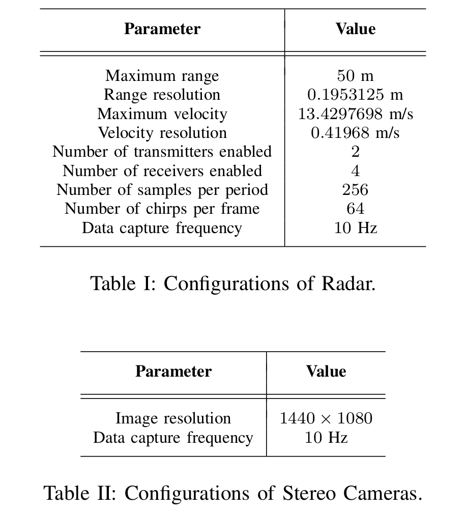
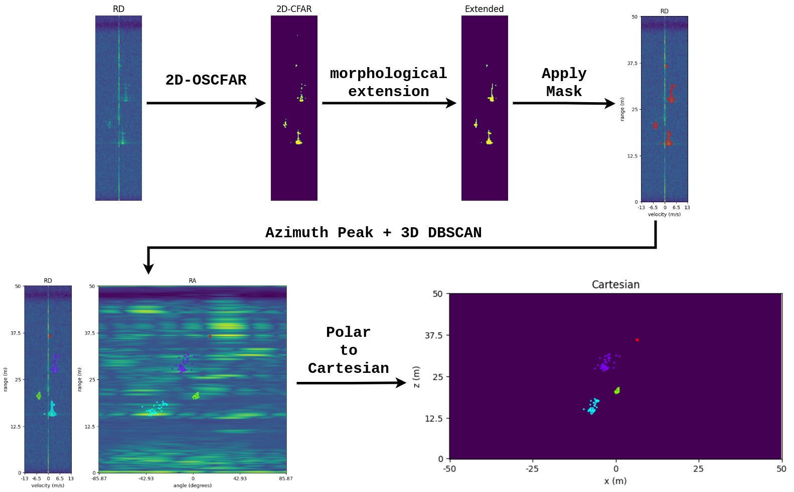

RADDet: Range-Azimuth-Doppler based Radar Object Detection for Dynamic Road Users
| Ao Zhang1, Farzan Erlik Nowruzi1,2, Robert Laganiere1,2 | |
|---|---|
| University of Ottawa1 Ottawa, Ontario, Canada |
Sensorcortek Inc.2 Ottawa, Ontario, Canada |
| Questions? Drop us a line | |
Overview
In recent years, deep learning based object detection algorithms have been widely explored in the image domain. In the radar domain, although object detection has gained a certain level of popularity, it is hard to find a systematic comparison between different studies. This is due to several reasons. First, various input and output formats have been seen among the related researches, such as Probabilistic Oriented Object Detection, Deep Radar Detector and CNN based Road User Detection. Second, there is no proper public dataset that can serve as benchmarks for the studies in this field. Thus, the researchers chose to build their own dataset. One common thing that can be found in most radar researches is that they only target dynamic objects, since the detections of dynamic objects are richer than static ones.
In this paper, we introduce a novel dataset and propose a new object detection model for dynamic road users. Our contributions are as follows:
- A novel dataset that contains radar data in form of RAD representations with corresponding annotations for various object classes is introduced. The dataset is available on Google Drive.
- An automatic annotation method that generates ground-truth labels on all dimensions of RAD data and in the Cartesian form is proposed.
- A new radar object detection model is proposed. Our model employs a backbone based on ResNet. The ultimate form of the backbone is achieved after systematic explorations of deep learning models on the radar data. Inspired by YOLO Head, we propose a new dual detection head, with a 3D detection head on RAD data and a 2D detection head on the data in Cartesian coordinates
Click here for more
Range-Azimuth-Doppler based Radar Dataset
The sensors used in data collection consist of a Texas Instruments AWR1843-BOOST radar and a pair of DFK 33UX273 stereo cameras from The Imaging Source. Figure below shows our sensors setup.
The configurations of both sensors are specified as Table I and Table II. As we can view the number of virtual antennas as a combination of the number of transmitters and receivers, the size of Analog-to-Digital Converter (ADC) data can be computed as (256, 8, 64). Due to the limited resolution of elevation angle of the radar, we opt to only consider the two dimensional birds eye view information from it.

For data synchronization, the timestamps are manually added to the radar outputs in order to synchronize with cameras. The implementation is conducted using the Robotics Operating System (ROS). We also re-calibrated the recorded timestamps of both sensors during the data capture.
The sensors calibration is implemented with a self-made trihedral corner reflector, shown in the figure above. In order to make the corner reflector easily recognizable for cameras, a coloured triangle shape foam plate is attached to the front of it. The projection matrix from stereo camera's frame to radar's frame is computed based on Calibration.
Traditional Digital Signal Processing (DSP) for Frequency Modulated Continuous Wave (FMCW) radar is divided into two steps. First, Fast Fourier Transform (FFT) is performed on each dimension of received Analog-to-Digital Converter (ADC) signals. The primary output of this step is Range-Azimuth-Doppler (RAD) spectrum. Second, Constant False Alarm Rate (CFAR) is employed for filtering out the noise signals. There are two major CFAR algorithms, namely Cell-Averaging CFAR (CA-CFAR) and Order-Statistic (OS-CFAR). OS-CFAR is normally more preferable for academic usages due to its high-quality outputs, while CA-CFAR is often used in the industry because of the speed. The output of this step is often transformed to Cartesian coordinates and presented as a point-cloud, which is the base of cluster-based radar data analysis for various applications. In our dataset, the radar data pre-processing employes the 2D OS-CFAR algorithm.
On the Range-Doppler (RD) outputs from 2D OS-CFAR, rigid bodies, such as vehicles, can be easily detected due to the speed coherence on the doppler axis. For human beings, Deep Radar Detector shows that different motions of different body parts may result in various output patterns on RD spectrum. However, when the radar's range resolution reaches a certain level, the complexity of human bodies' motion can hardly be observed. Thus, they also can be considered as rigid bodies. An example is shown in figure below. One property of the rigid bodies appearing on the RD spectrum is that they are often presented as linear patterns, despite the angle differences between the objects and the radar. Thus, by connecting the discrete patterns on the RD spectrum, we successfully enrich the detection rate of the traditional 2D OS-CFAR.

In this research, we used stereo vison for ground truth labelling. The whole process can be described as follow. First, stereo depth estimation is implemented with OpenCV to generate disparity maps. Then, Mask-RCNN is used on stereo images and the prediction masks are applied to the corresponding disparity maps along with category predictions. Finally, using the triangulation, the instance-wise point cloud outputs with predicted categories are generated.
Finally, the dataset can be generated by matching the radar instances and the stereo instances obtained above. Our dataset is available on Google Drive.
RADDet
The state of the art image based object detection algorithms consist of 3 parts, a backbone, a neck and a detection head (YOLOv4, FCOS, Focal Loss). Inspired by that we formulate our backbone networks based on widely used ResNet. In the image domain, the neck layers are used to extract ouputs in multiple levels in order to handle the scale variations of the objects. However, unlike images, that the distance changes the size of the objects due to pespective geometry, radars reveal the true scales of the objects. Therefore, multi-resolution neck layers are not considered in our research. Finally, we propose a novel dual detection head based on the well-known anchor-based algorithm YOLO. Figure below shows the data flow of our proposed architecture.
The 3D head processes the feature maps into [16, 16, 4 * num_of_anchors * (7 + num_of_classes)], where 7 stands for the objectness and the 3D box information. The 3D box information consists of the 3D center point [x, y, z], and the size [w, h, d]. The 2D detection head consists of two parts; a coordinate transformation layer that transforms the feature maps from polar representation to the Cartesian form, and a classic YOLO Head.
Testing
In order to visually inspect the performance of our model, we ran our model through the test set and compared the prediction boxes with the ground truth boxes. Figure below shows some visualization samples. We sincerely hope that this research and the dataset can bridge the gap between image based object detection with the radar based object detection, and inspire the development of more algorithms on autonomous radars.

Navigation
Industry Partners
Thank you to Sensorcortek for making this work possible!